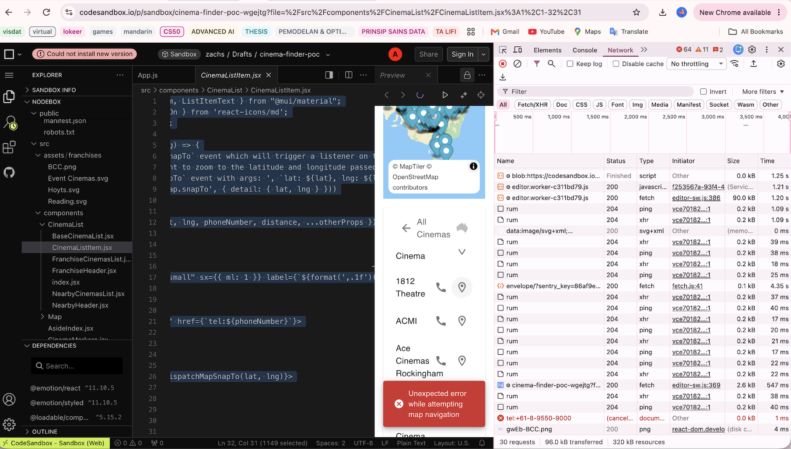

Computer Science graduate and Master's student at Telkom University seeking an internship in software quality assurance. I have hands-on experience in functional testing and debugging from an HCM web application project (Laravel, PHP, MySQL), plus technical documentation and data-mapping fixes for a hospital information system (SIMRS). I have completed the Jira for QA Testing course and am building my skills in test case design and bug reporting.
Computer Science background with experience in web development, functional testing, and technical documentation.
Relevant Coursework: Advanced Artificial Intelligence, Digital Business.
Relevant Coursework: Database Systems, Data Structures & Algorithms, Object-Oriented Programming (OOP), Software Engineering, Platform-Based Applications, Artificial Intelligence (AI).
Research paper for the 5th International Conference on Intelligent Cybernetics Technology & Applications 2025.
My background in web development and databases helps me understand how applications are built, which I'm now applying to learn software testing and quality assurance.
Testing application features against functional requirements and debugging issues before deployment.
Checking that database fields map correctly to print templates so forms show accurate data.
Writing step-by-step user manuals with annotated screenshots for end users.
Direct hands-on experience in hospital information system assurance, data mapping audits, web application functional testing, and technical documentation.
Demonstrated precision, financial audits, governance, and organizational stewardship across computer science student bodies.
Responsible for conducting internal financial audits of BPH HIMA IF. Reviewed transaction ledgers, verified balance consistency across organizational sub-units, enforced strict receipt documentation, and ensured full transparency in organizational financial governance.
Coordinated all organizational financial planning, managed budget allocation, monitored incoming revenues and outgoing expenditures, and produced structured financial reports to guarantee fiscal accountability and budgetary discipline.
Interact with real test case logs, live execution verdicts, Jira-formatted bug tickets, and diagnostic root cause telemetry from Datacom & SIMRS simulations.

One of the issues in the Cinema Finder web application from the Datacom job simulation.
Select a form template to see the type of data-mapping error I corrected (database field ID references) during my internship, so that the forms display accurate patient data.
Surgical safety checklist print template (Laravel Blade)
surgical_safety_checklist.blade.php
Testing, debugging, and documentation work from my internships, a job simulation, and QA practice.
Laravel and MySQL web application built during my internship at Yakes Telkom Bandung, with functional testing and debugging before deployment.
CRUD operations and employee profile management.
Recruitment workflow features.
Development Journey Management module.
Functional testing and debugging to meet requirements before deployment.
Reviewed a web application, identified the root cause of an issue, and fixed it so that clicking the map icon shows the cinemas in that area.
Engineered and verified 8 printable PDF clinical templates and authored 5 comprehensive user manuals with annotated workflow screenshots.
Scientific study on entity recognition models, applying strict data validation, annotation consistency, and precision-recall verification metrics.
Skills in functional testing, QA tools, documentation, and the web technologies behind the applications I test.
Formal credentials validating competencies in Jira QA testing, enterprise security, and object-oriented software engineering.
Course on using Jira for QA testing, including tracking bugs and test execution. (Course completed; no certificate issued.)
Comprehensive cybersecurity training covering threat vectors, identity & access control (IAM), authentication mechanisms, and application vulnerability identification (OWASP Top 10).
Core object-oriented software engineering foundation covering memory allocation, pointers, data structures, algorithmic thinking, and code-level white-box debugging techniques.
Interested in discussing a software QA internship? Send me a message.
Seeking an internship in software quality assurance.
Fill out the form below. It will automatically prepare a structured inquiry message for WhatsApp or direct email.